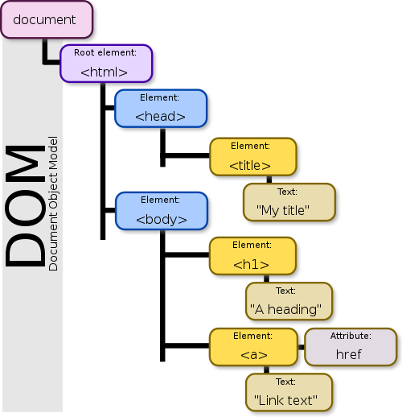
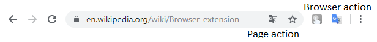

From https://en.wikipedia.org/wiki/Document_Object_Model
Example of Manifest.JSON:
{
// Required
"manifest_version": 2,
"name": "My Extension",
"version": "versionString",
// Recommended
"default_locale": "en",
"description": "A plain text description",
"icons": {...},
...
}
From https://developer.chrome.com/extensions/manifest
Content scripts
{
"name": "My extension",
...
"content_scripts": [
{
"matches": ["http://*.com/*"],
"css": ["myStyles.css"],
"js": ["contentScript.js"]
}
],
...
}
From https://developer.chrome.com/extensions/content_scripts
Background scripts
{
// Pick one (or none)
"browser_action": {...},
"page_action": {...},
"background": {
// Recommended
"scripts": ["background.js"],
"persistent": false,
// Optional
"service_worker":
},
"devtools_page": "devtools.html",
}

...
"browser_action": { // or page_action
"default_icon": { // optional
"16": "images/icon16.png", // optional
"24": "images/icon24.png", // optional
"32": "images/icon32.png" // optional
},
"default_title": "Your tittle", // optional;
"default_popup": "popup.html" // optional
},
...
From https://developer.chrome.com/extensions/browserAction
Message Passing
...
// Sending a request from a content script looks like this
chrome.runtime.sendMessage({greeting: "hello"}, function(response) {
console.log(response.farewell);
});
// from the parent extension to a content script
chrome.tabs.query({active: true, currentWindow: true}, function(tabs) {
chrome.tabs.sendMessage(tabs[0].id, {greeting: "hello"},
function(response) {
console.log(response.farewell);
});
});
...
From https://developer.chrome.com/extensions/messaging
Message Passing
...
// On the receiving end, you need to set up an runtime.onMessage
// event listener
chrome.runtime.onMessage.addListener(
function(request, sender, sendResponse) {
console.log(sender.tab ?
"from a content script:" + sender.tab.url :
"from the extension");
if (request.greeting == "hello")
sendResponse({farewell: "goodbye"});
});
...
From https://developer.chrome.com/extensions/messaging